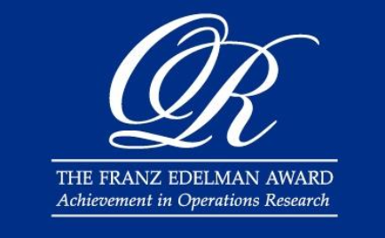
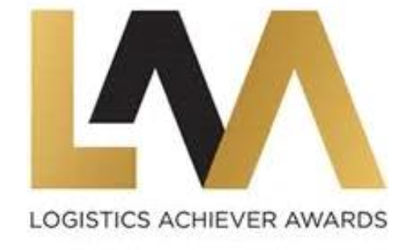
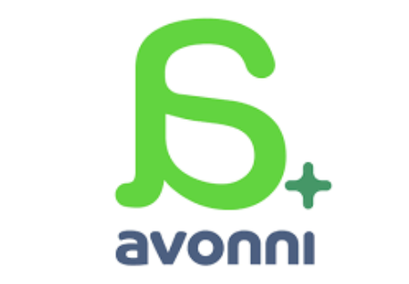

Sistemas de Optimización Avanzada
Diseñamos y desarrollamos sistemas de optimización basados en investigación operativa, analítica avanzada, machine learning y modelamiento matemático para resolver tu problema específico.
Optimizamos decisiones complejas con investigación operativa e IA aplicada. Donde haya datos y decisiones difíciles, Zerogap puede optimizar, sin importar la industria.
Conversemos tu desafíoLa consultoría de optimización es un servicio que aplica investigación operativa, modelamiento matemático e inteligencia artificial para mejorar la forma en que una organización toma decisiones complejas. En lugar de decidir por intuición o reglas históricas, se construye un modelo del problema que encuentra la mejor combinación de decisiones posible según los objetivos y las restricciones reales del negocio. En Zerogap es un servicio agnóstico a la industria: donde haya datos y decisiones difíciles, hay algo que optimizar.
Toda operación toma cientos de decisiones cada día: qué camión va a qué destino, cuánto producir de cada producto, qué ruta seguir, cómo asignar la flota o el personal, qué contrato adjudicar. Cuando esas decisiones se toman de forma aislada, por costumbre o con planillas, casi siempre queda valor sobre la mesa: más costo del necesario, recursos ociosos o cuellos de botella evitables.
La optimización aborda el problema completo a la vez. Construimos un modelo que representa tu operación —sus recursos, costos, restricciones y objetivos— y un algoritmo encuentra la combinación de decisiones que entrega el mejor resultado posible: el menor costo, el mayor rendimiento o el mejor servicio, según lo que importe en tu negocio. Es la diferencia entre una decisión razonable y la mejor decisión disponible.
Por eso el servicio no depende del rubro. Lo que necesitamos es que existan decisiones complejas y datos para apoyarlas. Sobre esa base, Zerogap ha optimizado operaciones en industrias muy distintas entre sí.
Diseñamos y desarrollamos sistemas de optimización basados en investigación operativa, analítica avanzada, machine learning y modelamiento matemático para resolver tu problema específico.
Diagnosticamos y rediseñamos procesos operacionales para transformar cada decisión compleja en una ventaja competitiva sostenible y medible.
Acompañamos desde la consultoría y el modelado hasta el desarrollo de software, la puesta en marcha y el mantenimiento de soluciones robustas que viven en tu operación.
Trabajamos con foco en resultados concretos y verificables, con un respaldo de reconocimientos internacionales y casos exportados a Latinoamérica y el mundo.
Un proceso estructurado para llevar la optimización desde el problema hasta la operación.
Entendemos el problema, las decisiones que importan y los datos disponibles, y definimos objetivos medibles.
Construimos el modelo de optimización con las restricciones reales de tu operación y validamos el enfoque.
Desplegamos la solución con acompañamiento continuo y transferimos el conocimiento a tu equipo interno.
Monitoreamos resultados, ajustamos sobre datos reales y mejoramos de forma continua.
La optimización toma muchas formas según la decisión que se quiera mejorar. Estos son algunos de los problemas que resolvemos, cada uno con su propia página de detalle:
¿No ves tu problema en la lista? Es esperable: el servicio es agnóstico a la industria y al tipo de decisión. Revisa nuestros casos de éxito, conoce más sobre qué hacemos o cuéntanos tu desafío en contacto.
Más de 30 años de optimización con impacto real

Dos reconocimientos: ASICAM como ganador histórico y la optimización de contenedores vacíos de una naviera como finalista.

Reconocimiento a la excelencia en logística.

Reconocimiento a la innovación tecnológica en Chile.
Nuestro trabajo no solo se aplica en la industria: también ha sido publicado en las revistas más relevantes del área de investigación operativa, como Operations Research e INFORMS Journal on Applied Analytics (antes Interfaces). Ese respaldo académico es el que sustenta soluciones como ASICAM y PLANEX, y la confianza de clientes en minería, forestal, naviera, energía y sector público.
Es un servicio que aplica investigación operativa, modelamiento matemático e inteligencia artificial para mejorar cómo una organización toma decisiones complejas. En lugar de decidir por intuición, se construye un modelo que encuentra la mejor combinación de decisiones según los objetivos y restricciones del negocio. En Zerogap es agnóstico a la industria: donde haya datos y decisiones difíciles, hay algo que optimizar.
Es la disciplina que usa modelos matemáticos y algoritmos para encontrar las mejores decisiones en sistemas complejos: cómo asignar recursos, planificar la producción, diseñar rutas o programar operaciones. Es la base técnica de Zerogap, con más de 30 años de experiencia y publicaciones en revistas como Operations Research e INFORMS Journal on Applied Analytics.
El servicio es agnóstico a la industria. Hemos desarrollado soluciones reales en minería, forestal, naviera y portuario, manufactura de bebidas, energía, sector público (licitaciones de alimentación escolar, pensiones y espectro 5G), correos y distribución postal, residuos urbanos y transporte ferroviario. El requisito no es el rubro, sino que existan decisiones complejas y datos.
Más de 30 años de experiencia y un respaldo poco común: dos reconocimientos en el Franz Edelman Award (ASICAM como ganador histórico y la optimización de contenedores vacíos de una naviera como finalista), el South African Logistics Achiever Award y el premio Avonni Innovador del Año, además de publicaciones en Operations Research e INFORMS Journal on Applied Analytics.
Tiene cuatro etapas: diagnóstico del problema y los datos, diseño del modelo de optimización con las restricciones reales, implementación con acompañamiento y transferencia al equipo, y optimización continua sobre datos reales. Podemos entregar desde el modelo hasta una solución de software de ciclo completo. Conversemos en contacto.
Cuéntanos tu desafío y te mostramos cómo la optimización puede mejorar tu operación, sea cual sea tu industria.
Contáctanos